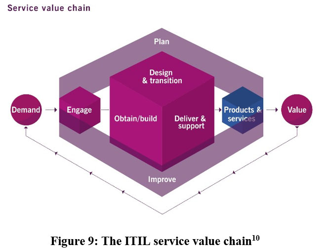

The service value chain is the central element of the SVS. It is an operating model that outlines the key activities required to respond to demand and facilitate value through products and services. The activities in the value chain are:
The service value chain is the central element of the SVS. It is an operating model that outlines the key activities required to respond to demand and facilitate value through products and services. The activities in the value chain are:CHAPTER 10: THE SVS: THE SERVICE VALUE CHAIN
The service value chain is the central element of the SVS. It is an operating model that outlines the key activities required to respond to demand and facilitate value through products and services. The activities in the value chain are:
•Plan
•Improve
•Engage
•Design and transition
•Obtain/build
•Deliver and support
Figure 9 shows the service value chain:
Activities in the chain don’t necessarily happen in a linear flow. Activities may happen in parallel, be repeated, or occur as a series of iterations. Different products, services and consumers will lead to different streams of work and different routes through the value chain. For example, developing a new application will be different from amending an existing one. These are an organisation’s value streams: combinations of practices and value chain activities that lead to value.
Each value chain activity relies on inputs and creates outputs for other activities. To convert inputs into outputs, the value
10 ITIL® Foundation, ITIL 4 edition, Figure 4.2.
chain uses combinations of ITIL practices, which are sets of resources designed for performing certain types of work. Each activity can potentially use:
•Resources
•Processes
•Skills
•Competencies
from one or more ITIL practices, and from inside or outside the organisation.
The activities are all interconnected. Skipping an activity, or spending less time on it than is needed, will impact the whole value chain as other activities will not receive the inputs they need.
There are some key points to remember about the service value chain activities:
•Engage includes all engagement interactions – for example, with internal or external customers, suppliers, subject matter experts participating in the organisation’s value chain activities, etc. All new resources are obtained through Obtain/build.
•All planning takes place in the Plan activity.
•Component, product and service creation, modification, delivery, maintenance and support are performed in an integrated way by the Design & transition, Obtain/build, and Deliver & support activities.
•Products & services, Demand and Value are SVS components, but they are not value chain activities.
“The purpose of the Plan value chain activity is to ensure a shared understanding of the vision, current status, and improvement direction for all four dimensions and all products and services across the organization.”
Information inputs into the Plan activity are used to create key outputs including improvement opportunities (for Improve) and contract agreements (for Engage).
 Table 11: Key Inputs and Outputs of the Plan Activity
Table 11: Key Inputs and Outputs of the Plan Activity
| Key inputs to the Plan activity | •Policies, requirements and constraints; •Consolidated demand and opportunities (from Engage); •Value chain performance information, improvement initiatives and plans (from Improve); •Improvement status reports (from Improve); •Knowledge and information about new or changed products and services (from Design & transition and Obtain/build); and •Knowledge and information about externally provided service components (from Engage). |
| Key outputs from the Plan activity | •Strategic, tactical and operational plans; •Portfolio decisions for Design & transition; •Architectures and policies; •Improvement opportunities (for Improve); •Contract and agreement requirements (for Engage); and •Product and service portfolio (for Engage). |
“The purpose of the Improve value chain activity is to ensure continual improvement of products, services and practices across all value chain activities and the four dimensions of service management.”
Deliver & support provides service performance information and Engage provides stakeholder feedback. Outputs include improvement initiatives, status reports and service performance information for Design & transition.
Table 12: Key Inputs and Outputs of the Improve Activity
| Key inputs to the Improve activity | •Product and service performance information (from Deliver & support); •Stakeholder feedback (from Engage); •Performance information and improvement opportunities (from all •value chain activities); •Knowledge and information about new or changed products and services (from Design & transition and Obtain/build); and •Knowledge and information about externally provided service components (from Engage). |
| Key outputs from the Improve activity | •Improvement initiatives and plans (for all value chain activities, products and services); •Value chain performance information (for Plan, and the governing body); •Improvement status reports (for all value chain activities); •Contract and agreement requirements (for Engage); and •Service performance information (for Design & transition). |
“The purpose of the Engage value chain activity is to provide a good understanding of stakeholder needs, transparency, and continual engagement and good relationships with all stakeholders.”
Engage provides oversight of requests and feedback from customers, as well as incidents to help identify Improve opportunities. Engage is not only about engagement with customers but also with suppliers, subject matter experts in the business, management and all stakeholders.
Table 13: Key Inputs and Outputs of the Engage Activity
| Key inputs to the Engage activity | •The product and service portfolio (from Plan); •Demand and opportunities for products and services (from internal and external customers); •Detailed requirements, requests and feedback (from internal and external customers); •Incidents, service requests and feedback (from users); •Information on the completion of user support tasks (from Deliver & support); •Marketing opportunities (from current and potential customers and users); •Cooperation opportunities and feedback (from partners and suppliers); •Contract and agreement requirements (from all value chain activities); •Knowledge and information about new or changed products and services (from Design & transition and Obtain/build); •Knowledge and information about externally provided service components (from partners and •suppliers); and •Improvement initiatives and improvement status reports (from Improve). |
| Key outputs from the Engage activity | •Consolidated demands and opportunities (for Plan); •Product and service requirements (for Design & transition); •User support tasks (for Deliver & support); •Improvement opportunities and stakeholder feedback (for Improve); •Change or project initiation requests (for Obtain/build); and •Contracts and agreements with external and internal suppliers and partners (for Design & transition and Obtain/build). |
“The purpose of the Design and Transition value chain activity is to ensure that products and services continually meet stakeholder expectations for quality, costs and time to market.”
This activity receives portfolio decisions as an input, as well as information about components provided by suppliers from Engage. This activity will create (among other outputs) requirements and specifications that are passed to Obtain/build and contract requirements that are passed to Engage.
Table 14: Key Inputs and Outputs of the Design and transition Activity
| Key inputs to the Design & transition activity | •Portfolio decisions, architectures and policies (from Plan); •Product and service requirements (from Engage); •Improvement initiatives and improvement status reports (from Improve); •Service performance information (from Deliver & support, and Improve); •Service components (from Obtain/build); •Knowledge and information about externally provided service components (from Engage); and •Knowledge and information about new or changed products and services (from Obtain/build). |
| Key outputs from the Design & transition activity | •Requirements and specifications (for Obtain/build); •Contract and agreement requirements (for Engage); •New and changed products and services (from Deliver & support); •Knowledge and information about new or changed services (for all value •chain activities); and •Performance information and improvement opportunities (for Improve). |
“The purpose of the Obtain/Build value chain activity is to ensure that service components are available when and where they are needed and meet agreed specifications.”
Organisations need to decide whether to create products and services themselves, or to use external resources, or a combination.
Table 15: Key Inputs and Outputs of the Obtain/build Activity
| Key inputs to the Obtain/build activity | •Architecture and policies (from Plan); •Contracts and agreements (from Engage); •Goods and services (from internal and external suppliers and partners); •Requirements and specifications (from Design & transition); •Improvement initiatives and status reports (from Improve); •Change or project initiation requests (from Engage); •Change requests (from Deliver & support); •Knowledge and information about new or changed products and services (from Design & transition); and •Knowledge and information about externally provided service components (from Engage). |
| Key outputs from the Obtain/build activity | •Service components (for Deliver & support and Design & transition); •Knowledge and information about new or changed service components (for all value chain activities); •Contract and agreement requirements (for Engage); and •Performance information and improvement opportunities (for Improve). |
“The purpose of the Deliver and Support value chain activity is to ensure that services are delivered and supported according to agreed specifications and stakeholders’ expectations.”
This activity will receive new or updated services, including service components from Obtain/build and user support tasks from Improve. The outputs will include the new or updated service being offered to users.
Table 16: Key Inputs and Outputs of the Deliver and support Activity
| Key inputs to the Deliver & support activity | •New or changed products and services (from Design & transition); •Contracts and agreements (from Engage); •Service components (from Obtain/build); •Improvement initiatives and status reports (from Improve); •User support tasks (from Engage); •Knowledge and information about new or changed products and services and components (from Design & transition and Obtain/build); and •Knowledge and information about externally provided service components (from Engage). |
| Key outputs from the Deliver & support activity | •Services (delivered to customers and users); •Information on the completion of user support tasks (for Engage); •Product and service performance information (for Engage and Improve); •Improvement opportunities (for Improve); •Contract and agreement requirements (for Engage); •Change requests (for Obtain/build); and •Service performance information (for Design & transition). |